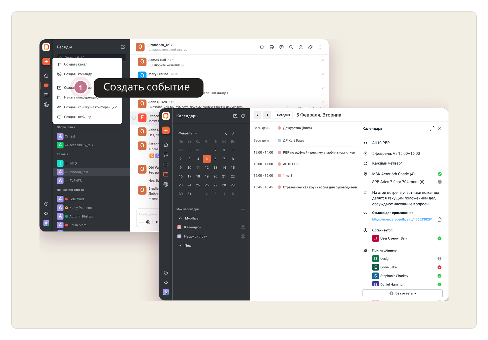
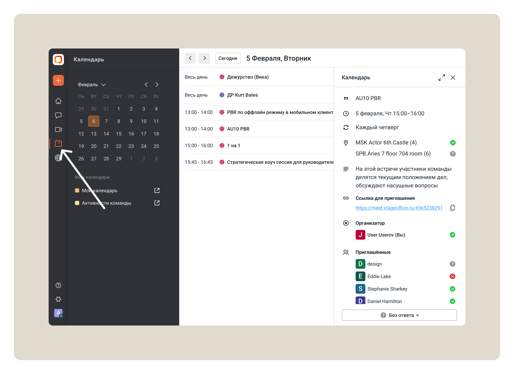
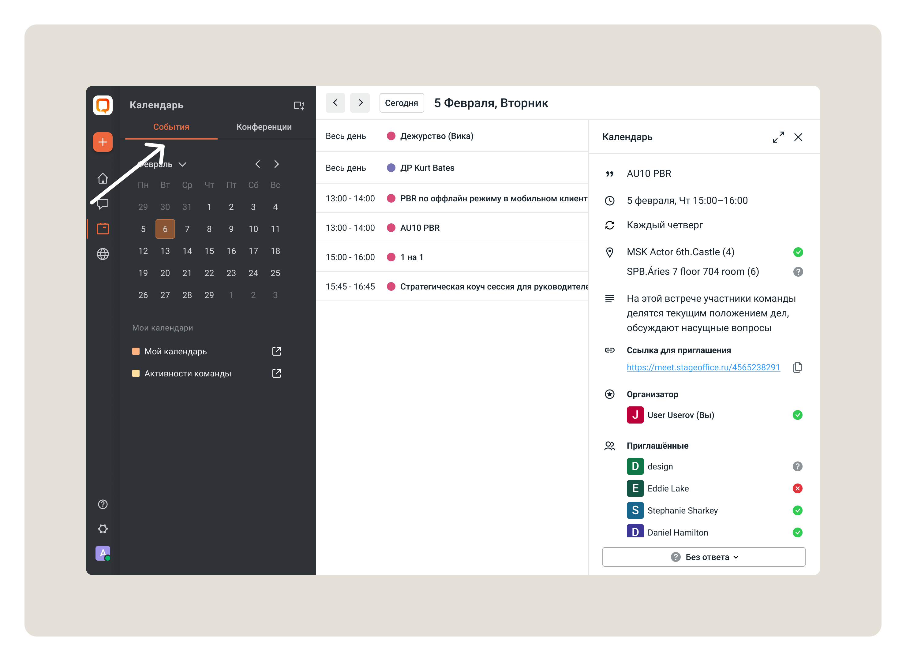
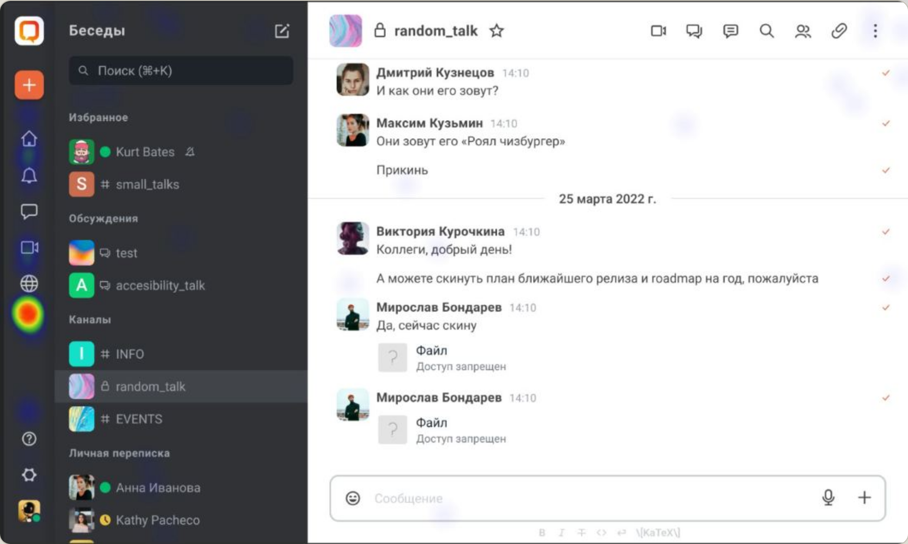
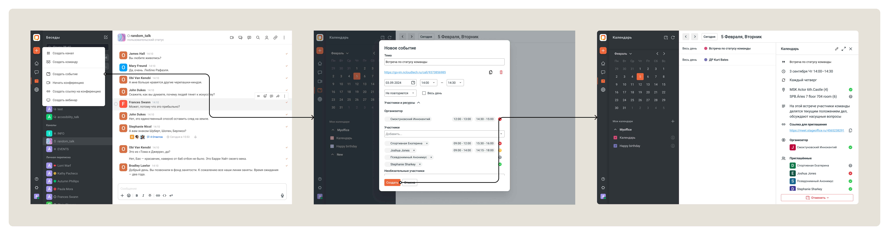
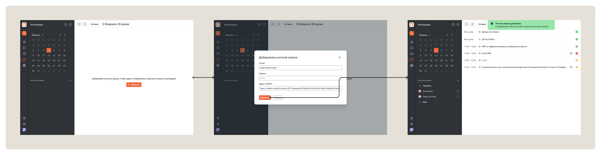
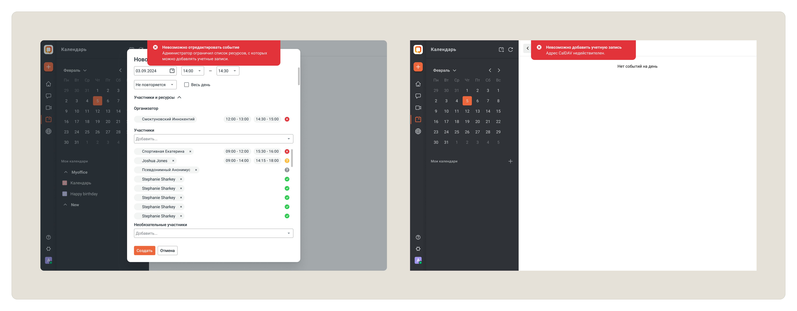
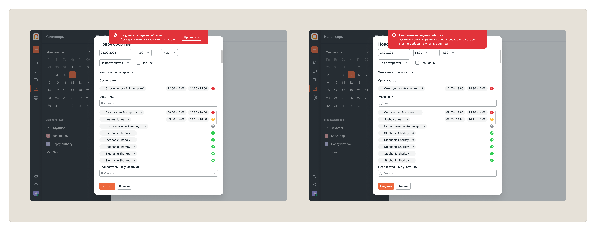

Календарь для корпоративного мессенджера
01Проект
Спроектировала календарь для корпоративного мессенджера Сквадус в экосистеме МойОфис.
Перед командой стояла задача добавить инструмент планирования встреч, который органично встроится в существующий сценарий коммуникации пользователей и закроет требования крупных корпоративных заказчиков.

02Контекст
Сквадус уже использовался как основной инструмент коммуникации внутри компаний, но пользователям приходилось переключаться между несколькими сервисами для общения и планирования встреч.
Крупные заказчики ожидали увидеть календарь внутри экосистемы продукта, однако команда не понимала:
- нужен ли календарь внутри мессенджера;
- где пользователи ожидают его найти;
- каким должен быть основной сценарий работы.
Ошибка на этом этапе могла привести к дорогостоящей разработке невостребованного решения.
03Задача
Определить оптимальный способ интеграции календаря в корпоративный мессенджер и спроектировать решение, которое будет соответствовать ожиданиям пользователей и требованиям бизнеса.
04Что я сделала
Анализ рынка
Изучила решения Microsoft Teams, Slack, VK Teams и других корпоративных платформ.
Анализ показал, что большинство продуктов связывают календарь с коммуникацией и встречами, но используют разные подходы к его размещению и навигации.
На основе анализа сформировала несколько гипотез интеграции.
Формирование гипотез
Совместно с командой проработали несколько вариантов размещения календаря:
- отдельное приложение внутри экосистемы;
- раздел в навигации мессенджера;
- сценарии через чаты и встречи.
Каждый вариант имел преимущества и ограничения, поэтому следующим шагом стало исследование пользователей.
Календарь как самостоятельный раздел в боковой навигации

- +Понятная отдельная сущность и возможность масштабировать календарь дальше.
- +Не требовалась переработка существующего раздела конференций.
- −Появлялась дополнительная сущность в навигации, ценность которой нужно было подтвердить.
Календарь внутри существующего раздела «Конференции»

- +Все сценарии встреч и конференций оказывались в одном месте.
- −Смешивались разные сущности и появлялся риск усложнить уже существующий раздел.
Исследование пользователей
Провела количественное исследование среди 194 респондентов.
Цель исследования:
- понять привычки работы с календарями;
- определить ожидаемое место расположения календаря;
- выявить ключевые пользовательские сценарии.

Что удалось узнать
- Календарь является одним из основных рабочих инструментов пользователей.
- Большинство ожидает видеть его в основной навигации продукта.
- Ключевой сценарий — быстрое создание и управление встречами.
Полученные данные позволили принять решение на основе пользовательских ожиданий, а не внутренних предположений команды.
Определение MVP
Чтобы определить состав первого релиза, мы совместно с аналитиком, разработчиком и тестировщиком построили User Story Mapping.
В результате выделили основные сценарии использования календаря: подключение календаря, просмотр расписания, создание и редактирование событий, получение приглашений и управление встречами.

05Решение
На основе исследования спроектировала календарь как отдельный раздел внутри мессенджера.
Основные принципы решения:
- быстрый доступ из основной навигации;
- знакомые паттерны корпоративных календарей;
- минимальное количество действий для создания встречи;
- единый пользовательский опыт внутри экосистемы МойОфис.
06UX-решения
Навигация
Календарь размещён в основном меню приложения, поскольку именно этого ожидало большинство пользователей по результатам исследования.
Создание события
Сократила количество шагов для создания встречи и сохранила привычную модель взаимодействия, знакомую пользователям корпоративных продуктов.

Управление участниками
Сделала акцент на сценариях приглашения и подтверждения участия, поскольку именно они являются основой корпоративных коммуникаций.
Визуальная интеграция
Календарь был встроен в существующую дизайн-систему Сквадус, благодаря чему новый функционал воспринимается как естественная часть продукта.

Ошибки и нестандартные ситуации
Для сценариев подключения продумала ошибки авторизации, ограничения списка ресурсов и недоступные CalDAV-адреса.


07Результат
- Провела исследование среди 194 пользователей.
- Определила оптимальную точку интеграции календаря.
- Спроектировала новый раздел продукта для Desktop-платформы.
- Подготовила решение к разработке и релизу.
- Функциональность вошла в продуктовую линейку МойОфис.
- Решение помогло закрыть требования крупного enterprise-заказчика.
Что было важно
Главным результатом проекта стало не создание ещё одного календаря, а принятие продуктового решения на основе данных пользователей.
Исследование позволило команде избежать спорных предположений и выбрать направление, которое соответствовало ожиданиям аудитории и потребностям бизнеса.